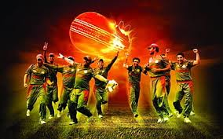
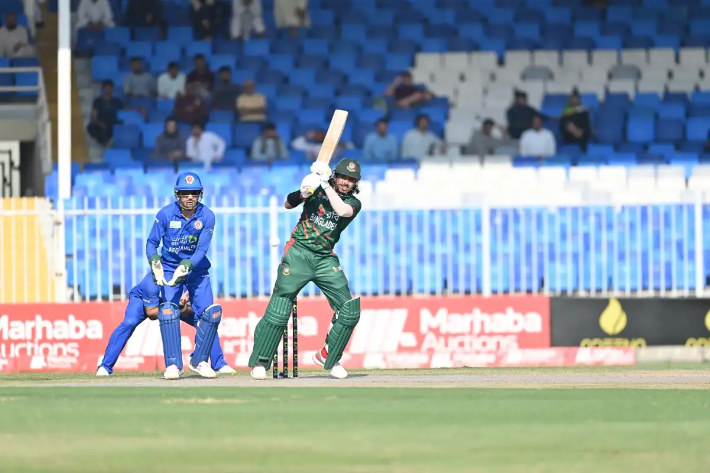
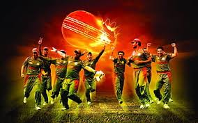
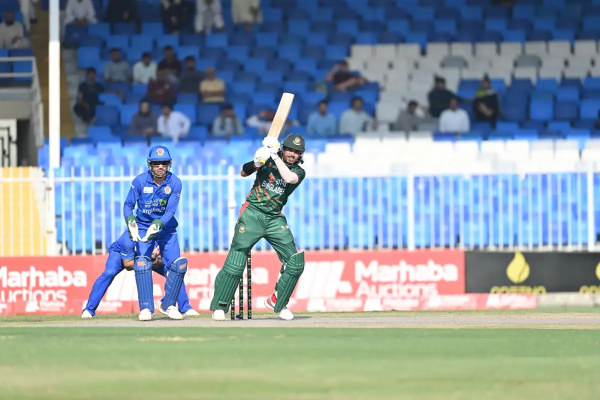

Welcome to my WEBSITE....
Cricket and football (soccer) are two of the world's most popular sports, each with a rich history and passionate fan
base.
.....Cricket, often described as a gentlemans' game, originated in England in the 16th century and is particularly
popular in countries like India, Australia, and Pakistan. It is known for its strategic depth and can last anywhere from
a few hours in a Twenty20 match to several days in a traditional Test match.
.....Football, on the other hand, is a
fast-paced, high-intensity game played on a rectangular field, where two teams of 11 players each aim to score goals by
kicking a ball into the opposing team’s net. Originating in England in the 19th century, football has become a global
phenomenon, with events like the FIFA World Cup drawing billions of viewers.
.....Both sports bring people together, inspire
fierce rivalries, and are celebrated with massive events and tournaments, yet they differ greatly in their rules,
gameplay, and cultural significance.